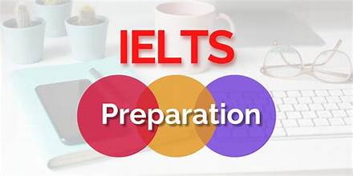

| INTRODUCTION | MATCHING HEADING | TRUE - FALSE - NOTGIVEN and YES - NO - NOT GIVEN | WORDS COMPLETION |
|
There are four modules of IELTS (International English Language Teaching System). IELTS reading is one of them. Most of the aspirants have quarries about types of questions in IELTS reading. Therefore, in this article, I am here to discuss about IELTS reading all types of questions.
There are 3 lengthy passages in the test of IELTS reading. While these passages are taken from books, articles, newspapers, journals, or from magazines. The time duration for this test is 60 minutes. You have to complete your whole test within time constraint. You will face 40 questions in the test. There are 14 different types of questions in IELTS reading. Each passage has 3-4 different types of questions. Furthermore, you must have to prepare well for getting good bands. Practice a lot and read a lot. Practice all different types of questions for the preparation of IELTS reading.  |